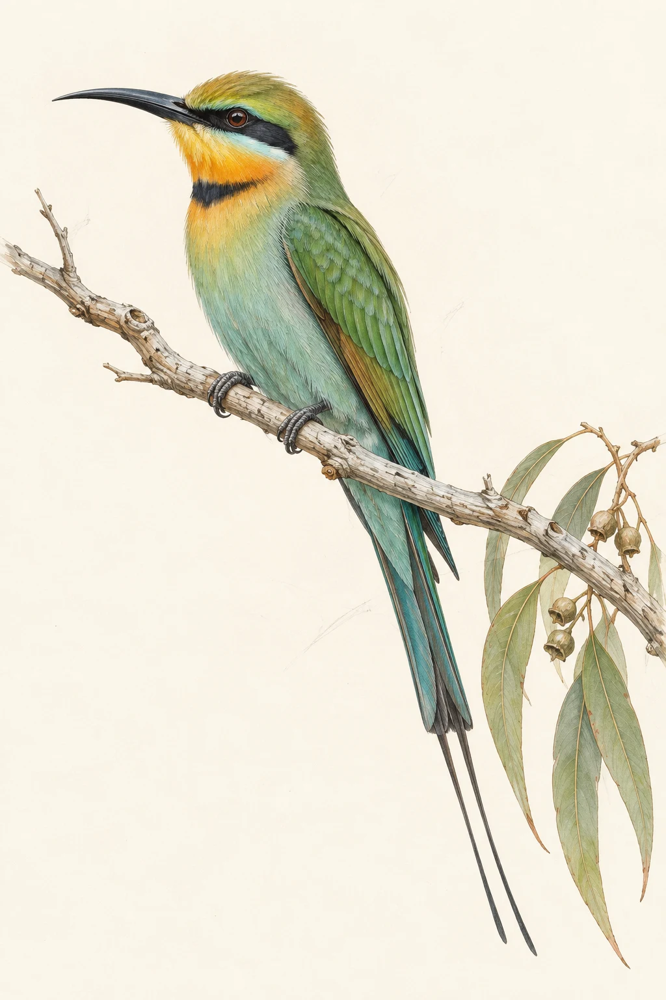

A visual field journal · 2024–2026
Australia,
through a
birdwatcher’s
eyes.
Millions of sightings. A continent of contrasts.
A different story every season.
Open the notebook to discover where Australian birds are recorded, how the sightings change, and what remains beyond our view.
Open the field journalInterpreted through data.By Wen-Shen Lum
Monash University Malaysia

change with the seasons.Find its story
First, look at
where we look.
The notebook begins with 9,575,922 filtered sighting records from 2024. They come from three citizen-science datasets: eBird, Birdata and iNaturalist, shared through the Atlas of Living Australia.
A continent, unevenly observed
2024 · all three sourcesDarker cells hold more records. The east coast stands out; the interior is much quieter.
Small places, dense notebooks
2024Adjusting for land area changes the comparison. Tiny ACT, home to Canberra, has the highest record density.
The families filling the pages
2024Honeyeaters occupy the largest named family block. But the recorded birdlife spans many families.
Three ways
of seeing.
The platforms do not contribute equally. 86.8% of our 2024 records come from eBird.
A pattern in the combined dataset will therefore reflect eBird much more strongly than iNaturalist. Source composition matters.
Follow the records into each state
2024Wider ribbons carry more records. Trace a dataset on the left to its state contributions on the right.
Turn the calendar.
The cast changes.
Birds move, breeding seasons arrive, and people change when they go outside. The records carry all of those influences. Follow a full year before drawing a conclusion.
A year around the notebook
2024Follow each state’s ring clockwise. Green marks a faster recording pace than its own yearly average.
Familiar faces trade places
2024 · seven annual leadersFollow a line to see a species rise or fall in the monthly rankings. These seven birds have the most records over the full year.
One bird.
Two very different maps.
For rainbow bee-eaters, 48.3% of summer records lie at or south of 30°S. In winter, that share falls to 1.0%. The seasonal contrast is visible in both the map and the latitude profiles.
Change the season, watch the footprint
A seasonal signature in latitude
2024Each ridge shows where that month’s bee-eater records fall. South is left; north is right.
Some birds arrive and leave. Others are here all year.
2024 · eight featured speciesThe top four birds swing between almost absent and several times their usual share. The bottom four barely move all year. Each row compares a bird’s monthly share of the records with its own annual share.
Often recorded
doesn’t mean safe.
A busy notebook cannot tell us whether a population is secure. To add that context, we turn to a second source: Australia’s national threatened-species list, dated 28 August 2026.
Threatened birds are still being seen
2024 records × August 2026 listingsEach dot is one of 65 threatened species matched by scientific name. Some have thousands of records; others have only a handful.
Conservation crosses
state lines.
The current list contains 150 extant threatened bird taxa associated with at least one of the eight jurisdictions.
Some are species; others are subspecies. Their listed state associations overlap, so adding state totals would count some taxa more than once.
Follow a column
from the dots to the count.
Which states share the same listed birds?
28 August 2026Connected dark dots identify an exact combination of states. The number above counts the listed bird taxa associated with exactly that combination.
A newer page
can still be unfinished.
The latest records matter. So does knowing what has actually reached the database. Here is what the three sources contain in the snapshot retrieved on 10 September 2026.
Check the coverage before comparing the years
2024–August 2026Green means the month holds records; the number inside is how many. eBird’s 2025 rows stop in August, and no 2026 eBird records appear in this filtered ALA snapshot. Those gaps are why the main seasonal story uses 2024.
One source.
Two complete calendars.
iNaturalist has records in every month of both 2024 and 2025. That permits a comparison without switching between platforms.
We compare each bird’s share of all iNaturalist bird records, rather than interpreting platform growth as bird growth.
Which featured birds gained ground, and which lost it?
iNaturalist · 2024 vs 2025Each bar is how much a bird’s share of iNaturalist records grew or shrank, as a percentage of its own 2024 share. Green is a gain, ochre a loss.
Every sighting adds a page.
The gaps are part of the story.
Citizen observations reveal an extraordinary seasonal record. Reading it well means paying attention to the birds, the people looking for them, and the places still waiting to be observed.
Revisit the atlasInside the notebook
Sources, definitions and a reproducible record of the work.
Observation data
Atlas of Living Australia, hosting eBird Australia, BirdLife Australia’s Birdata and iNaturalist Australia. Downloaded 10 September 2026 through exhaustive aggregate queries.
We retain human observations marked present, spatially valid, with a known month, in the eight states/territories and within 112–154°E, 44–10°S. This focuses on mainland Australia, Tasmania and nearby islands and waters.
Conservation & geography
DCCEEW Threatened Species State Lists, 28 August 2026. The bird subset excludes extinct entries and offshore-only listings for the overlap chart.
Geoscience Australia land areas, published table updated 2014. Boundaries: Natural Earth 1:50m, public domain. Maps use an Australian Albers equal-area projection.
How to read the evidence
Record counts are not bird counts, unique observer counts or complete survey checklists. Cross-platform duplicates are possible. ALA’s spatial-validity filter does not remove every possible error.
Seasonal comparisons describe this observation snapshot. Current conservation status does not establish a species’ status in 2024. Scientific-name joins are exact and intentionally leave uncertain matches out.
Methods, name matching and limitations
The main snapshot contains 9,575,922 records and 760 named species. A further 217,108 records have no species-level assignment; these remain in overall totals but not species rankings. The species count includes all recorded taxa in scope, including introduced or unusual records, and is not a count of native Australian birds.
Monthly shares divide species records by all bird records in that month. Relative shares then divide by the equivalent annual share. The circular calendar instead adjusts counts for month length and compares each state with its own daily average. Neither method fully controls observer effort.
Conservation comparisons use the DCCEEW “Scientific Name” field at species level, with no inferred synonym matches and no promotion of subspecies listings to their parent species. 65 species match exactly with positive 2024 records. An unmatched name can reflect taxonomy differences, geography or no records; it is not proof of absence.
The recent comparison uses six birds with the greatest absolute record-share changes among the journal’s featured set, not among all Australian species. Record density uses published total land area as a denominator; the sighting scope includes nearby coastal records, so it is a broad geographic comparison.
All three map idioms use a consistent projection. Rounded-coordinate grids have unequal physical area; they show counts, not equal-area density. The bee-eater latitude comparison uses rounded one-degree bins, so the 30°S threshold is approximate.
Authorship & AI acknowledgement. A FIT3179 data visualisation by Wen-Shen Lum, Monash University Malaysia, September 2026. Built with assistance from OpenAI Codex for research, data processing, writing and implementation. The rainbow bee-eater artwork was generated with OpenAI’s image-generation tool. It is decorative, not a scientific identification reference. Charts are original Vega/Vega-Lite specifications based on the cited real-world data.
Typeface credits: Literata, Bricolage Grotesque and Kalam, distributed under the SIL Open Font License. Source data retain their original licences; see the query log, dataset metadata and methodology for attribution.